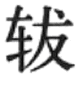

第四节
军 礼
军礼是师旅操演、征伐之礼。《周礼·春官·大宗伯》说：“以军礼同邦国”，这是讲对于那些桀骜不驯的诸侯要用军礼使其服从和同。《周礼》所说的军礼包括以下内容：
大师之礼，用众也；大均之礼，恤众也；大田之礼，简众也；大役之礼，任众也；大封之礼，合众也。
“大师之礼”，指军队的征伐行动；“大均之礼”，指均土地，征赋税；“大田之礼”，指定期狩猎；“大役之礼”，指营造、修建等土木工程；“大封之礼”指勘定封疆，树立界标。后代礼书又有将射礼、祭道路、日月有食伐鼓相救等作为军礼内容的，这里只简介征战、校阅、田猎、马政等几项。
一、征战之礼
1．出师祭祀
军队出征，有天子亲征与命将出征之不同，二者礼数规格也有不同。军队出征前有许多祭祀活动，主要是祭天、祭地、告庙和祭军神。
出征前祭天叫类祭，在郊外以柴燔燎牲、币等，把即将征伐之事报告上帝，表示恭行天罚，以上帝的名义去惩罚敌人。古代干支纪日有刚日、柔日之分，甲、丙、戊、庚、壬为刚日，刚日属阳，外事须用刚日。类祭即在刚日举行，但具体的日子则要通过占卜择定。
出征前祭地叫宜社。社是土地神。征伐敌人是为了保卫国土，所以叫“宜”。后代多将祭社（狭义指本国土地神）、祭地（地是与天相对而言的大地之神）、祭山川湖海同时举行。祭社仍以在坎中瘗埋玉币牲犊为礼。
出征前告庙叫造祢。造就是告祭的意思，祢本特指考庙，但后代都告祭于太庙，并不限于父庙。告庙有受命于祖的象征意义。
祭军神、军旗称为“祃祭”。军神，一说是轩辕黄帝，一说是蚩尤。祭祀时要杀牲，以牲血涂军旗、战鼓，叫做衅旗鼓。军中大旗叫“牙旗”，古有“牙旗者将军之精”，“一军之形候”的说法。［47］杩祭后代也称“杩牙”，就是祭牙旗。东汉以后，出征前常有“建牙”仪式，把大旗树起来，然后“祃牙”。不少著名的文人，如陈子昂、柳宗元等写过《祭牙文》、《祃牙文》。
唐宋后，礼书说天子有六军，实行六纛之制。即一军有一旗。于是，祃祭既要祭牙旗，也要祭六纛，建坛位，张帷幄，设旗、纛神位，掘坎埋瘗，礼仪也更趋复杂。
杩祭本来已含有“祠五兵”的意义，但后来兵器的种类不断发展，兵器和主管神的祭祀也逐渐增加。明代专门修建了旗纛庙，庙中祭祀的神有旗头大将、六纛大神、五方旗之神、主宰战船正神、金鼓角铳炮之神、弓弩飞枪飞石之神、阵前阵后神、五猖神等。不过，这已不是征伐出师之前的祭祀，而是常设之祠。清代皇帝亲征，要在堂子内祭旗，建御营黄龙大旗，其后分列八旗大纛及火器营大纛各八面。皇帝戎装佩刀，乘马出宫，率从征将士三跪九叩行礼。
出征必经道路，因此要祭祀道路之神，即“祭”。上古山行曰，驾车出门有“犯”之祭。祭在道路上封一小土堆，以树枝草木为神主，驭者一手执辔，一手以酒浇洒车两轮轴端（古人称“轵”；或称“ ”），再浇车厢前的挡板，然后将酒饮尽。祭毕，驾车从封土上辗轹而过，表示从此跋山涉水，可以一往无前。［48］后代皇帝亲征，祭在国门之外举行，刳羊并设罇罍于神座前，为坎瘗埋祭物，唐《开元礼》以后的礼书中不再见到有祭的记载。
”），再浇车厢前的挡板，然后将酒饮尽。祭毕，驾车从封土上辗轹而过，表示从此跋山涉水，可以一往无前。［48］后代皇帝亲征，祭在国门之外举行，刳羊并设罇罍于神座前，为坎瘗埋祭物，唐《开元礼》以后的礼书中不再见到有祭的记载。
2．誓师
祭祀礼毕，出征的军队有誓师典礼，一般是将出征的目的与意义告知将士，揭露敌人的罪恶，强调纪律与作风，也就是一次战前动员和教育。《尚书》所载《甘誓》、《汤誓》、《牧誓》等，都是上古著名的誓师之辞。如果是命将出征，天子要在太庙召见大将军及全军将校，授之以节钺（后代常授刀剑）。君王拿着斧钺的端首，把柄交给大将，表示将节制军队的全权授予他。
清初誓师与祭天谒堂子同时举行。努尔哈赤天命三年（1618年，明万历四十六年），正式对明宣战，谒庙誓师宣布“七大恨”，把明王朝杀其父祖，拘杀使者，偏袒并帮助叶赫氏等七条“罪状”，作为告天并动员将士的内容。皇太极崇德时遣将出征明朝，皇帝亲自送至城外，询问出征的王公、贝勒、贝子等：你们是不是忘记了“七大恨”？大家齐声回答：没有忘记！于是，鸣炮三声，大军出发。
3．军中刑赏
军队在外行军作战，刑赏尤须严明。《尚书·甘誓》说：“用命赏于祖，弗用命戮于社。”《孔丛子》［49］也说：“其用命者则加爵受赐于祖奠之前，其奔北犯令者则加刑罚戮于社主之前。”所谓“赏于祖”，因为天子率军出征时要将祖庙的木主载于车中，随军一起行动，所以奖赏有功的将士就在祖先神主之前颁赐。所谓“戮于社”，也是指在社神的木主前对有罪之人加以刑戮。《孔丛子·儒服》中子高向信陵君解释这么做的理由，说：“赏功于祖，告分之均，示不敢专也。戮罪于社，告中于土，示听之当也。”这是说为了表示刑赏都公正无偏，鬼神可鉴。
刑赏的依据是军法，《司马法》［50］规定，军队进入敌国后，“无暴神祇；无行田猎；无毁土功（不破坏土建工程）；无燔墙屋；无伐林木；无取六畜、禾、黍、器械；见其老幼，奉归无伤；虽遇壮者，不校勿敌（无敌对行为者，不得随意捕捉）；敌若伤之，医药归之”。军纪规定非常严明。后代也大都有类似的规定。如明代以“行军号令”规定军中刑赏例则，内容有：交锋之际，能突破敌阵，斩将搴旗者；本队战胜敌人后主动援助友军者；受命后能出奇克敌制胜者，皆为“奇功”。能奋勇前进，首先败敌者；有前队军士未能决胜，后队向前杀败敌军者，皆为“头功”。对阵之时不尽力杀敌，而抢掠人畜财物者；抛弃、盗卖兵器或盗人衣粮诸物、盗杀马驴者；队伍已定后，马军进入步队或步队进入马军者；行军、驻扎时擅离队伍，杂入别营、别队者；宿营夜间有喧哗、失火者，皆为“重罪”。临敌畏避退后及妄谈灾异、妖言；泄露军机者，皆斩首。临阵时，有内官持象牙牌随军，看到有勇敢当先、杀敌有功之人即给予牙牌，作为战后升赏的凭证。青海大通上孙家寨马泉墓出土汉简就保存了许多军法条文。［51］
军中刑赏都重视及时见效，“赏不逾时”，“罚不迁列”，［52］这是由于战争形势瞬息万变，刑赏及时，使人知道什么可做，什么不可做，才能克服消极因素，因势利导，夺取胜利。
4．凯旋
军队获胜而归，谓之“凯旋”，其时高奏凯乐，高唱凯歌。天子亲征凯旋，大臣出城迎接，有时远至数十里之外。如果是命将出征凯旋，有时皇帝也会亲率百官出城至郊外迎接，以示慰劳；有时则派遣大臣出城迎接。这都称为“郊劳”。
军队凯旋后要在太庙、太社告奠天地祖先，并有献捷献俘之礼，即报告胜利，献上虏获的战利品。在两周一些铜器铭文中常记有战争胜利后献捷献俘之事，像《小盂鼎》铭文说，盂征伐方，执兽（首领）四人，获（馘）近五千，俘虏一万三千余人，及车、马、牛、羊，数以百计。馘，即作战时将杀死的敌人的左耳割下，献捷时作为计功邀赏的凭证。所以，这个字在金文里，以耳为偏旁。“献馘于王”［53］，正是献捷之礼。《小盂鼎》铭文还记载，盂将捉获的敌人首领献于周王后，周王下令审讯敌酋，然后将他们处死。在其他铜器铭文里还提到一些别的战利品，如矛、戈、弓、服、矢、甲胄等。［54］
献捷献俘之礼，历代大致沿用，只细节各有不同。宋代，大军凯旋后遣官奏告天地、宗庙、社稷、岳渎、山川、宫观及在京十里以内神祠，以酒脯行一献之礼。献俘仪式将被俘敌酋以白练捆缚带往太庙、太社作象征性的告礼，然后在宣德门行献俘礼。皇帝在门楼前楹当中设帐幄座位，文武百官及献俘将校在楼下左右班立，楼前稍南设献俘之位。百官到齐后，侍臣将班齐牌用红丝绳袋提升上楼，报知皇帝。皇帝就座，百官三呼万岁行礼，侍臣宣布“引献俘”，将校把被俘者带到献俘位。侍臣当众宣读战胜敌军的“露布”（捷报）。刑部尚书奏告，将某处所俘执献，请交付所司处置。这时，如果皇帝下令处以极刑，就由大理卿带往法场；如果皇帝下令开释，侍臣便传旨先释缚，随即宣布释放。被俘者三呼万岁，再拜谢恩。文武百官也都再拜搢笏（把笏版插在腰带上）舞蹈，三呼万岁。明、清两代与宋制相似，献俘仪式在午门门楼举行。
“露布”制度，始于后魏。东汉时，本来把官文书不加缄封者称为“露布”。后魏以“露布”发表战胜消息。每当攻战克捷，欲使天下遍知，便以漆竿上张缣帛，写上捷报。这种办法后来被广泛采用。露布就成为“布于四海，露之耳目”的“献捷之书”。隋代文帝起，有宣露布之仪。当时在广阳门外集中百官及四方客使，宣读露布。宣读毕，百官舞蹈再拜行礼。
诸侯战胜敌方，向天子或大国报告胜利消息，也称为献捷。后代，将帅统领军队在前方作战获胜，虽然不曾还师回都，遣人向朝廷报告胜利，也称为献捷。捷报一般在早朝时当廷宣读，叫做“宣捷”。明代，前方有大捷，朝廷宣捷后要遣官告祭郊庙，中捷以下则不举行告祭庆贺之礼。
战争结束，如果敌方投降，则有受降之仪。宋代起，国家礼典中都有受降仪式。宋代受降仪与献俘大致相同，也在宣德门举行，降王率降众穿戴本国衣冠俯伏而拜，口称万岁。皇帝下旨赦罪，赐给冠服袍带，降王等拜受，更换所赐冠服袍带后，再拜称万岁。清代受降仪，降王对皇帝行三跪九拜礼，皇帝赐筵宴。大将军在前方受降，须报请皇帝批准，再露布中外周知。受降之日，于军营外筑坛，坛旁建“奉诏纳降”大旗。降者立于旗下，鼓吹鸣炮后，大将军登坛就座，降者匍匐膝行至坛下，俯首乞命。大将军宣皇上旨意，予以赦免，并酌量给予赍赏。降者叩头谢恩而退。
5．饮至与论功行赏
战争胜利结束，天子要宴享功臣，论功行赏。上古把这种“享有功于祖庙，舍爵策勋”的礼仪称为“饮至”。《小盂鼎》铭文中多次提到庆功用酒，郭沫若已指出，这就是“归而饮至”之礼。周王又赏赐盂以弓矢、干戈、甲胄等。后代“饮至”享宴不再行于宗庙，改在正殿或宫苑举行。
论功行赏之礼最为隆重者，莫过于历代定封开国功臣。周武王灭商后，封侯建国，以藩屏天子，是众所周知的。当时，赏赐给各国诸侯的，不仅有彝器、兵器、仪仗、车辆、宝玉、缣帛，还有大量的商族奴隶。汉高祖分封功臣，建立了许多异姓诸侯王国，但实际上没有多久，由于种种原因许多功臣被杀戮，封国被废除。
明代论功行赏仪式在奉天殿举行。受赏将士官员于午门外班列整齐，内官引导至丹墀下序立，文武百官皆侍立。皇帝就座，众官行四拜礼，承制官宣读皇帝的制命，众官俯伏而拜，然后颁赏。受赏官依次到礼案前跪受诰命，由吏部官代授；接受礼物，由礼部官代授。受赏官左侧又跪有二侍者，接受的诰命与礼物分别交给侍者，受赏者俯伏行礼而退。封赏礼毕，众官鞠躬而拜，三舞蹈，跪而三呼万岁。诰命与礼物，由仪仗、鼓乐相随，送到受赏官员的府第。
6．师不功
军队打了败仗，称为“师不功”，或称为“军有忧”。军队回国则以丧礼迎接。国君身穿丧服，头戴丧冠，失声痛哭，并且吊死问伤，慰劳将士。
二、校阅之礼
《礼记·月令》说，孟冬之月，“天子乃命将帅讲武习射、御，角力”。后代据以定大阅之礼。大阅的目的在于检查备战状况。天子亲临，称为“亲讲武”。我国古代的军事理论一向重视军队的平时训练，认为“兵事以严终”［55］，军队严加警备，强化操练，反而使得敌人不敢轻举妄动，所以要定时校阅演习。春秋经传记当时诸侯各国“大阅”、“治兵”之事甚多。
汉代军队分为南北军，立秋后郊礼完毕即为演武校阅之时，将士肄习孙吴兵法六十四阵。每年十月，有“都试”之法，即抽调军队演习骑射车御，并进行比试考核。地方郡县则由当地军事长官组织演习、考核。这一制度可能秦代就已有了，但因材料不足不能详知。东汉时，光武帝取消郡县军事长官，地方的都试之法也同时废止。据说，这是为了防止在都试时发生兵变。西汉末，东郡太守翟义举兵反王莽，就是在都试之日，杀掉不服从的官吏，部署将帅，领兵起事的。灵帝中平五年（188），天下形势不稳，大将军何进调集四方兵将于平乐观讲武。观下建大坛，坛上建十二重五彩大华盖，灵帝居其下，步兵、骑士数万人结营为阵。当时有所谓“西园八校尉”负责统辖讲武之事，后来争雄天下的袁绍（中军校尉）、曹操（典军校尉）都在其中。
汉武帝在长安开凿昆明池以训练水军，这是凿池肄习水师之始。建安中，曹操在邺城开挖玄武池，用以操练舟师。后代史书上有关演练水军舻舰的记载甚多。北魏文成帝和平三年（462），校阅制度有了较大变更，主要是分全军为南北二军进行对抗性的演习。步兵分青、赤、黑、黄色编队，将盾、稍、矛、戟各种攻防长短兵器搭配妥当，使之“周回转易，以相赴就，有飞龙腾蛇之变”［56］。又排定函箱、鱼鳞四门之阵，共十余种阵法，或跪或起，或进或退，击钟鼓为节。布阵完毕，南北二军鼓角齐鸣，各用骑将6000人来往挑战抗击，最后以南军负，北军胜而告终。北军代表北魏军队，这种演习仍是表演的成分居多。
后齐季秋讲武，演习战阵之法，讲究目、耳、心、手、足的训练。目，要求战士熟识旌旗指挥的意义，旗卧则跪，旗指则起。耳，要求战士能熟悉金鼓敲击的信号，击鼓则进，鸣金则止。心，要求战士懂得军法如山，刑赏严明。手，要求战士能熟练使用各种兵器，自如地应付战斗中的复杂情况。足，要求战士能有跋山涉水的硬功夫，并练好跪姿。讲武也分为主、客二军，作象征性的对抗演习。
唐代讲武之仪于仲冬之月在都门外举行。皇帝以下，文武九品以上官员皆前往，各州郡使者及番邦宾客亦由有关方面安排参观，百姓也可在校场之外任意观看。校场内步兵及骑士上、中、下三军各自一分为二，成东西二军，分居左、右两厢。讲武前，中军大将宣誓：今行讲武，以教人战，进退左右，一如军法，用命有常赏，不用命有常刑，可不勉之！各军下级士吏向所属部下兵士强调传达誓词，使之引起重视。其后，六军皆依旗鼓号令操演，有司击鼓举旗而士众皆起而行进，击钲而止；有司击鼓三声，偃旗，士众皆跪。继而又列阵演习五行相胜之法。两军更迭而互为主、客。接下来，两军又各自选出执刀盾之士50人，相互挑战，操演勇怯、胜败之状。然后，二军俱变为直阵，随旗鼓相向而进，至中线立有表帜处，作模拟性的攻防技击，唯不得以刃伤人。步军演习完毕，骑军出场。其阵法变幻，两军对抗与步军相仿。
唐玄宗先天二年（713）十月，在骊山下举行大规模的讲武，征兵20万，旌旗连绵五十余里，戈金甲照耀天地。长安士庶百姓奔走相告，前往观看，道路为之壅塞。新丰地方的百姓免除来年地税，并且赔给由于麦苗被践踏而遭受的损失，按值给米。
宋代天子亲自参加讲武之礼，除步骑、水军演习外，还要观看飞山兵射连发弩机石等。仁宗时，有大臣提出，校阅操练“虽整肃可观，然临敌难用”［57］，建议加强骑射训练，以应付实战需要。以后校阅训练中有所改进，按照挽弓强弱及发射中的多少规定士兵的等级，作为使用、升迁与赏罚的根据。
神宗时推行新法，也对兵制进行了改革，扩大了禁军，以取代厢军，实行保甲制度，组织民兵加以训练。京都设置了四个固定的校场，又先后制定了八军、九军战阵之法，马射六事之法（一顺鬃直射、二背射、三盘射、四射亲、五野战、六轮弄），神臂弓射之法，集教法，团教法等各种教阅之法；诸如“步射执弓、发矢、运手、举足、移步及马射、马使蕃枪、马上野战格斗、步用标排”，都制定了规范化的条文并绘图加以说明，命令军吏兵士必须人人习诵。后来，由于“愚懵者颇以为苦”，实在行不通，只得废止。［58］北宋军队训练的制度、方法号称“最为密微”，但成为讽刺的是在抗击异族侵略的战争中，宋军却屡遭败绩。这除了政治上的原因外，在军事上，与朝廷往往硬性规定，要求前线将帅按阵图作战，因而不能随机应变，灵活指挥有关。
明中期以后，政治空前腐败，军队受到严重侵蚀，士兵被驱使从事劳役，豪强地主兼并农户，隐匿壮丁，军队多以老弱充数。在这种情势下，大阅讲武只是空谈。史载自万历九年（1581）至明亡60余年从未举行过校阅讲武之礼，明末皇帝的昏庸于此可见一斑。
清初定三岁一举大阅，至嘉庆时一直遵循此制。最初在南苑，后来也有在卢沟桥、玉泉山等地举行。参加校阅的有骁骑、护军、前锋、火器各营。各军依指挥，每前进五丈作一次枪炮实弹射击，前九次每次一发，第十次连发。此外，还有列阵结队冲锋演习。
康熙三十年（1691）又创“会阅”典礼，皇帝亲率部众在今承德一带会集49旗藩王、台吉；［59］先置宴设歌舞杂技，次日各营布旗就列，皇帝身穿甲胄校阅。
三、田猎之礼
上古田猎是一项具有军事意义的生产活动，并与祭祀有关。殷商甲骨文中有大量的田猎记录，所获猎物有麋、鹿、兔、兕、狐等。殷商已是农业经济为主的社会，田猎不再是以糊口果腹为目的的生产手段，周代更是如此。田猎的作用，依文献所说有下列各项：一是为田除害，保护农作物免受禽兽糟蹋；二是为供给宗庙祭祀；三为了驱驰车马，弯弓骑射，兴师动众，进行军事训练；最后，田猎所获山珍野味也用于宴飨宾客及“充君之庖”。（图4—20）
图4-20 战国铜鉴针刻宴乐射猎图
礼书说，周代的制度为四时田猎：春蒐、夏苗、秋狝、冬狩。田猎有一定的礼规，不按礼法狩猎是暴殄天物。礼法规定，田猎不捕幼兽，不采鸟卵，不杀有孕之兽，不伤未长成的小兽，不破坏鸟巢。另外，围猎捕杀要围而不合，留有余地，不能一网打尽，斩草除根。这些礼法对于保护野生动物资源，维持自然界生态平衡是有积极意义的，只是不可能真正严格实行。
史籍记载历代君王田猎之事甚多，大都是以田猎作为游嬉玩乐的方式，因而荒废政务，伤害百姓的也不在少数。汉代司马相如写《上林赋》，扬雄写《羽猎赋》等都是为了谏讽皇帝沉溺狩猎，后代类似的作品也不少。
隋炀帝于大业三年（607）在榆林地区狩猎，突厥及西域、东胡等地酋长皆来朝贡。炀帝为了炫耀军事力量，冬狩规模极为宏大。
金、元时，由于民族习俗的缘故，田猎之风更盛，国家设“打捕鹰坊”，专司田猎；有专职猎户不事稼穑。自皇帝至王公贵族手下皆有“昔宝赤”，即“鹰人”，田猎时纵鹰隼捕捉飞禽走兽；打围则数万骑出动，对农业生产的破坏及对百姓的骚扰极大。
清代，从康熙中期起有“木兰秋狝”之典礼。木兰在承德以北，今围场县，原意满语为吹哨引鹿之处。吹哨即仿鹿鸣之声。木兰行猎，内蒙古四十九旗藩王、外蒙古喀尔喀四部以及青海、蒙古、新疆、东西布鲁特、安集延等各部皆不远万里赶来参加，“朝谒踵集，唯恐后时”［60］。因此木兰行猎实则又有政治上笼络各族、融洽关系的意义。当时田猎有行围与合围两种，行围是围而不合，合围是四面包围。皇帝在围中建用于观望的“看城”，兵士将野兽向“看城”附近驱赶。包围合拢后，皇帝入围，周览形势，并指挥射猎突围之兽。遇猛兽则由虎枪营官兵开枪击毙。如果围内野兽较多，则围开一面，使一部分逃逸，亦禁止围外之人追逐射杀。“哨鹿”打猎，由扈从十余人随皇帝至山林哨鹿所，一名侍卫举鹿头作雄鹿呦呦鸣叫之声，引招牝鹿闻声而至，弯弓发矢，将鹿射毙，当即取鹿血而饮。
四、马政
“马政”一语，出自《周礼·夏官·校人》“掌王马之政”。养马、用马，关乎军国大事，被称为“甲兵之本，国之大用”，“安宁则以别尊卑之序，有变则以济远近之难”，［61］历代都作为军礼的重要内容，十分重视。《周礼》涉及马政的条文甚多，有养马、牧地、交配、执驹、医疗、祭祀等一套完整的制度。祭祀为每年四祭。春祭马祖，据说马祖是天驷星，即房星。郑玄注引《孝经说》称房星为“龙马”［62］。夏祭先牧，先牧是养马始祖。秋祭马社，马社可能是马厩之神，说是最初教人乘驾者。《世本》记“相土作乘马”，商人的始祖相土就是“马社”。冬祭马步，据说马步是给马造成灾害之神，祭祀可以使马免受灾祸，多多蕃息。养马业的发展推动了相马术和养马理论的发展。早在西周时就有造父相马的故事。春秋时，又有伯乐、九方皋、徐无鬼等著名的相马专家。在马王堆汉墓帛书中发现的《相马经》残文即长达五千余字，据研究是战国时期楚人的著作。后汉初，名将马援曾师从名家学习相马之法，他铸造一匹铜马，作为“名马法式”，供相马者借鉴。他还著有《铜马相法》，以简单明了的文字归纳了相马方法。在考古发掘中，东汉墓中时有铜马出土。最著名的是1969年在甘肃武威出土的“马踏飞燕”铜像。这些铜马制作考究，体躯强健，造型俊美，大都符合《相马经》各项标准，很可能是“名马法式”。
秦汉时由太仆掌舆马之事。汉初马匹奇缺，一马价值千金，“自天子不能具钧驷，而将相或乘牛车”［63］。连天子的车乘都找不到四匹毛色相同的马来拉，将相要乘牛车，马匹的稀缺可想而知。后来国家大力发展养马，长安内外设置了许多养马的厩苑，西北边境建六座牧师苑，养马数十万匹。到武帝时已“众庶街巷有马，阡陌之间成群”。其后历朝之马政大致沿袭汉代体制。隋初太仆寺下设骅骝、乘黄、龙厩等署，负责皇家用马，陇右牧总监下有24个军马牧及骅骝牧等。隋代“马祭”礼仪，仲春用少牢祭马祖于大泽，祭毕在燎坛积柴燔燎。仲夏祭先牧，仲秋祭马社，仲冬祭马步，皆选刚日在大泽举行，用少牢，但不用燔燎而用瘗埋方式。
唐代沿用隋陇右监牧之制。贞观时，太仆张万岁职掌群牧，至麟德时养马至70余万匹。安史之乱时，唐肃宗李亨逃到彭原（今甘肃庆阳、镇原一带），后在平凉一带搜集了监牧马匹数万匹，重振官军。其后，陇右苑牧畜马悉数为吐蕃劫掠。宪宗后虽稍有恢复，但已远不及旧日。唐代马祭与隋略同，而牺牲用一羊，二笾豆，一簠簋，由皇帝遣官行祭。宋初先后由左、右飞龙院等负责马政。真宗咸平三年（1000）设群牧使司管理皇家、军国马匹。南宋在江南重设牧监，但因水土不适马匹繁育，故孳生甚少。国家所需战马，仍仰仗川、陕、广南三个边疆地区。宋代马祭一如前代，南渡后或不设坛壝而在昭庆寺设位祭祀。
辽、金、元三代，民俗皆善骑射畜养，国家辟有辽阔的牧场，马匹数目甚巨。元代牧地遍布全国。牧官马人父子相承，自夏至冬，随地之宜，行逐水草，过着游牧生活。每年九、十月时，由官府阅视，并造册上报。明代皇家用马由御马监管理，军国用马有国养、民养二种。明代马政，办法虽然也不少，但流弊甚深，归根结底仍是封建官僚政治的腐败所致。明初金陵建有马祖先牧太仆庙，为四坛，于春秋二仲月十五日祭马祖、先牧、马步、马社，皇帝遣官行三献之礼。永乐后，在北京建有马神庙；弘治时又在通州建马神庙。清代的马政分别由上驷院、太仆寺掌管，另有部分马匹分给蒙古各部落放牧。满汉八旗各营及各省驿递塘站用马，按月给银，各就其处分而饲养。